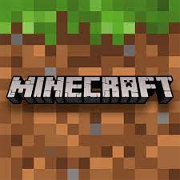

Roblox is an online game platform and game creation system developed by Roblox Corporation that allows users to program and play games created by themselves or other users.
At its core, Roblox is a gaming platform that allows you to play dozens of user-created games or create games through Roblox Studio. From role-playing games to rhythm titles and shooters, the platform is a toy box of experiences for all ages.
It was founded by David Baszucki.I play a game called "Blox fruits" in Roblox because it is a game which refers to a animated series which I watched
Minecraft is a game made up of blocks, creatures, and community. Blocks can be used to reshape the world or build fantastical creations. Creatures can be battled or befriended, depending on your playstyle. Experience epic adventures solo or with friends, there's no wrong way to play.I like it because of its difficult gameplay which I find challenging.
Fast-paced 3v3 multiplayer and battle royale made for mobile! Play with friends or solo across a variety of game modes in under three minutes. Unlock and upgrade dozens of Brawlers with powerful Super abilities, Star Powers and Gadgets! Collect unique skins to stand out and show off.
Brawl Stars is one of the most entertaining games currently available on smartphones. It's highly polished, but somehow lacks the heady compulsion that typified the early days of Clash Royale or Boom Beach, with rounds feeling less fun and exciting than the colourful cartoon characters that participate in them.It is owned by company which earns millions of dollar called "Supercell".